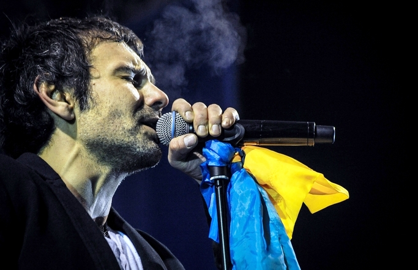
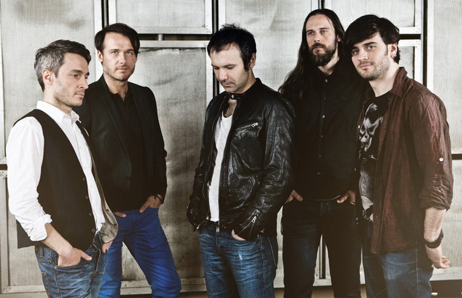

Слухати вибране
Лелеки
На небі
Обійми
Сосни
Стріляй
Ти квітка
Ти собі сама
Не йди
Без бою
❖ Історія гурту ❖
До 1998 року, львівський період
У 1992 році студент Андрій Голяк (вокал) створив гурт «Клан тиші», до якого ввійшли його однокласник Павло Гудімов
(гітара), а також знайомий Юрій Хусточка (бас-гітара) та Денис Глінін (ударні). Гурт виступав у палацах культури
рідного Львова. Два роки потому А. Голяк одружився й покинув гурт — «Клан тиші» перетворився у тріо. У березні 1994
хлопці познайомилися з 19-річним студентом теоретичної фізики Святославом Вакарчуком. Влітку Вакарчук прийшов на першу репетицію,
а з осені четвірка репетирувала регулярно і вже 12 жовтня 1994 року, як прийнято вважати, було створено новий гурт —
«Океан Ельзи», який тоді грав переважно суміш поп- і ліричної рок-музики. Святослав став її вокалістом, а також автором більшості
текстів і музики гурту.
У грудні 1994 гурт виконав свої перші чотири демозаписи на студії «Галвокс». Перший серйозний виступ відбувся 12 січня 1995 року
перед Львівським оперним театром, де зібралося 7 тисяч глядачів. Того ж року в рамках авторського музичного проекту «Є» відомого
львівського музиканта Олега Джона гурт зняв свій перший (неофіційний) відеокліп на пісню «Long time ago» (режисер — Володимир Зайковський)
та виступив на фестивалі «Червона Рута» у Львові. 1996 року гурт випустив максі-сингл «Будинок зі скла», що розповсюджувався серед
шанувальників. Починаючи з того ж 1996-го, ОЕ почав активно концертувати — не тільки в Україні, а й у Польщі, Німеччині та Франції,
взяв участь у Таврійських іграх, а також разом з іншими українськими гуртами виступив на одній сцені з Deep Purple під час Осіннього
Рок-Марафону в Києві. 1997 року відбувся перший значний сольний концерт гурту у Львові. У квітні 1998-го музиканти переїхали до Києва.
До 1998 року, львівський період
1998 року ОЕ розпочав роботу з продюсером Віталієм Клімовим, підписав контракт із «Nova Records» та записав дебютний альбом,
який побачив світ у вересні під назвою «Там, де нас нема». Пісні гурту посідали перші місця в чартах, їхня ліричність та
незвичайний вокал Святослава Вакарчука здобули шанувальників по всій Україні. У 1999 Океан Ельзи виступив у паризькому МСМ Café
(виступ транслював телеканал МСМ International), взяв участь у російському фестивалі «Нашествие». На фестивалі Таврійські Ігри
музиканти отримали нагороди «Прорив року» та «Найкраща пісня» (за композицію «Там, де нас нема» з однойменного альбому). Того ж
року відбулося перевидання альбому в Росії. Проте великої популярності «Океан Ельзи» здобув у Росії після виходу фільму Олексія
Балабанова «Брат 2» та виходу в ротацію на MTV кліпів «Там, де нас нема» і «Сосни».
На початку 2000-го року гурт завершив роботу над другою платівкою — «Янанебібув», яку випустили одразу на двох лейблах — українському
Nova Records і російському Real Records. Вже після її релізу (21 лютого) до ОЕ приєднався клавішник Дмитро Шуров (як сесійний
учасник) і почалися виступи та репетиції в новому складі. Двічі поспіль (2000 і 2001) на Таврійських Іграх ОЕ був лауреатом у
категорії «Найкращий поп-гурт». 2001 року гурт записав найкращий, на думку деяких критиків,[Джерело?] альбом української
рок-музики — «Модель» (після запису якого Шуров став п'ятим офіційним учасником колективу). Того ж року в рамках співпраці
з компанією Пепсі ОЕ гастролював Україною. На Таврійських Іграх-2002 за підсумками 2001 року відразу дві їхні пісні («Друг»
і «911») увійшли до списку 10 найпопулярніших хітів України, а «Океан Ельзи» визнали «Найкращим рок-гуртом». «Модель» назвали
«Альбомом року». Через рік після виходу платівки «Суперсиметрія» (2003), що вперше в Україні отримала статус двічі платинової,
гурт покинули басист Юрій Хусточка і клавішник Дмитро Шуров — обоє взялися за реалізацію проекту «Esthetic Education».
2004—2012, другий склад, сольні проекти Святослава Вакарчука
З 2004 року в гурті грають басист Денис Дудко і сербський клавішник Мілош Єліч, який співпрацював із гуртом під час туру
«Тихий океан». Перший концерт «Океану Ельзи» в новому складі відбувся в липні в місті Алмати. У квітні 2005-го року гурт покинув
гітарист Павло Гудімов, ця подія отримала значний резонанс, оскільки, за словами Гудімова, ініціатором цієї зміни складу був
Вакарчук.[3] Але вже через місяць його замінив гітарист Петро Чернявський. 22 вересня 2005 року відбувся реліз альбому Gloria,
який у перший же день продажу став «платиновим» — за 6 годин було продано 106 000 примірників, а до кінця року вже двісті тисяч.
Вокаліст Святослав Вакарчук як посол доброї волі Програми Розвитку ООН для молоді в Україні взяв участь у багатьох соціальних
та культурних проектах. Зокрема, всі кошти, отримані від продажу синґлу «Веселі, брате, часи настали…» було призначено для
дитячого будинку в місті Макіївці. 2006 року рок-гурт зіграв безкоштовний концерт для українських миротворців у Косові.
25 квітня 2007 року гурт Океан Ельзи презентував новий альбом «Міра». Новий реліз було присвячено загиблому саундпродюсеру
Океан Ельзи Сергію Товстолузькому. Учасники гурту вважають альбом найбільш «роковим» за всю історію команди.
У грудні 2007-го року гурт випустив відео до пісні «Лист до мами», вихід якої був приурочений до Дня Збройних Сил України.
2008 року Святослав Вакарчук презентував джаз-проект «Вночі», випустивши однойменний альбом. Альбом вийшов під ім'ям
Святослава Вакарчука як ідейного натхненника, проте над ним працювали всі музиканти О. Е., як і багато запрошених музикантів.
10 березня 2010 року було презентовано сьомий студійний альбом гурту, що отримав назву «Dolce Vita». Альбом містить тринадцять
композицій, а також бонусний трек — народну пісню «Ой, чий то кінь стоїть». На підтримку альбому відбувся масштабний (8 місяців)
«Dolce Vita тур», що охопив майже 100 міст в Україні, Росії, Білорусі, Європі, Канаді та США. 1 грудня 2010 року було випущено
«Dolce Vita (remastered)», зі зміненим звучанням все тих же пісень.
27 вересня 2011 року гурт відіграв концерт у Державному Кремлівському Палаці (Москва).[4] У 6-тисячній залі був аншлаг, а
після концерту музикантів кілька разів викликали «на біс». Цей виступ гурт провів у супроводі симфонічного оркестру МВС РФ
під управлінням Фелікса Арановського.
13 грудня 2011 на YouTube каналі Океану Ельзи відбулась презентація другого сольного проекту Вакарчука під назвою «Брюссель».
На підтримку альбому пройшов тур містами СНД.
Виступ Океану Ельзи відбувся на заключному концерті в рамках Red Rocks festival в Лондоні напередодні закриття Олімпіади-2012.
Окрім вже відомих хітів групи, музиканти вперше виконали нову пісню «All Together».
Земля, 2013 рік
27 Лютого 2013 було презентовано відео на перший сингл з нового альбому Земля, який отримав назву «Обійми́». 11 квітня 2013
року офіційно було оголошено про припинення співпраці між гуртом та гітаристом Петром Чернявським. За офіційним
повідомленням, це зумовлено «творчими причинами та прийняте за спільною згодою всіх учасників».[5][6] У найближчому
майбутньому його замінить сербський гітарист Владімір Опсеніца, що брав участь у записі деяких пісень нового альбому.
12 квітня було анонсовано точну дату релізу нового альбому та його назву — Земля.[8] 15 травня 2013 року в мережу інтернет
було викладено новий альбом, тоді як реліз CD в Україні відбудеться 20 травня, в інших країнах — 22 травня[9]. 19 травня на
підтримку альбому розпочався стадіонний тур. По завершенні української частини туру гурт Океан Ельзи на своєму YouTube
каналі анонсував великий концерт під назвою «Океан Ельзи — 20 років разом!», який відбудеться 21 червня 2014 року у Києві
на стадіоні НСК «Олімпійський». Виступи також відбулись на стадіонах Львова, Дніпропетровська, Одеси та Харкова.
14 грудня Океан Ельзи зіграли на підтримку Євромайдану на Майдані Незалежності у своєму «золотому» складі: Вакарчук, Гудімов,
Хусточка, Шуров та Глінін.
Заради цього виступу Юрій Хусточка прилетів з Парижа. Свій концерт гурт закінчив зі словами: «Важливі речі об'єднують,
пам'ятайте… Дякуємо, все тільки починається!».
2014
В 2014—2015 гурт проводить всеукраїнський тур, приурочений його 20-річчю. 21 червня 2014 в рамках цього туру відбувся
концерт у Києві на НСК «Олімпійський». Концерт тривав понад 3 години. Кілька композицій гурт відіграв у старому складі:
Святослав Вакарчук, Денис Глінін, Юрій Хусточка, Дмитро Шуров, Павло Гудімов. Єдиним екс-учасником гурту, що не з'явився
на сцені, був Петро Чернявський, котрий відіграв у гурті з 2005 до 2013 року. Цей концерт зібрав понад 70 тисяч відвідувачів
і став наймасовішим концертом в історіі України.
❖ Склад гурту ❖
Теперішні учасники
- Святослав Вакарчук — вокал (1994 — до сьогодні);
- Денис Глінін — ударні (1994 — до сьогодні);
- Денис Дудко — бас-гітара (2004 — до сьогодні);
- Милош Єлич — клавішні (2004 — до сьогодні);
- Владімір Опсеніца — гітара (2013 — до сьогодні).
Колишні учасники
- Юрій Хусточка — бас-гітара (1994—2004);
- Дмитро Шуров — клавішні (2001—2004);
- Павло Гудімов — гітара (1994—2005);
- Петро Чернявський — гітара (2005—2013).
❖ Дискографія ❖
Студійні альбоми
- 1998 — Там, де нас нема;
- 2000 — Янанебібув;
- 2001 — Модель;
- 2003 — Суперсиметрія;
- 2005 — Gloria;
- 2007 — Міра;
- 2010 — Dolce Vita;
- 2013 — Земля;
- 2016 — Без меж.
Сингли
- 1996 — «Будинок зі скла»;
- 2004 — «Дякую!»;
- 2006 — «Веселі, брате, часи настали…»;
- 2009 — «Я так хочу…»;
- 2013 — «Обійми»;
- 2013 — «Стріляй»;
- 2013 — «Rendez-Vous»;
- 2015 — «Мовчати»;
- 2015 — «Не твоя війна»;
- 2015 — «Життя починається знов»;
- 2015 — «Мить»;
- 2016 — «Не йди».
Акустичні альбоми
- 2003 — «Tviй формат».
Збірки
- 2006 — «1221»;
- 2007 — «Вибране…»;
- 2010 — «Океан Ельзи: The Best Of»;
- 2014 — «Найкраще (2CD)».
Інші альбоми
- 2010 — «Dolce Vita /remastered».
Окремі проекти учасників гурту
- 2005 — «Трампліни» — сольний альбом Павла Гудімова;
- 2008 — «Вночі» — сольний альбом Святослава Вакарчука;
- 2011 — «Sofia» — сольний альбом Дениса Дудка (джазовий квінтет «Дудко»);
- 2011 — «Брюссель» — сольний проект Святослава Вакарчука, у якому як музикант також брав участь
Петро Чернявський, а Мілош Єліч виступив у ролі продюсера..
❖ Фото ❖

